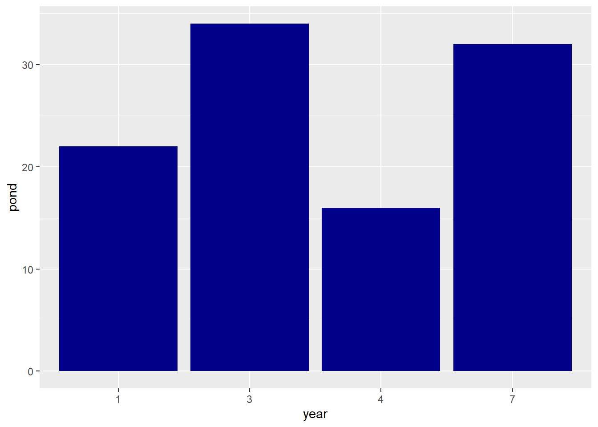

`summarise()` has grouped output by 'sex', 'island'. You can override using the
`.groups` argument.
pinguinos2
# A tibble: 5 × 4
# Groups: sex, island [3]
sex island species mean_body_mass
<chr> <chr> <chr> <int>
1 FEMALE Biscoe Adelie 3900
2 FEMALE Biscoe Gentoo 5200
3 FEMALE Dream Adelie 3700
4 FEMALE Dream Chinstrap 4150
5 FEMALE Torgersen Adelie 3800
catra <-read.csv("catrate.csv")catra2 <- catra %>%mutate(year =as.factor(years)) %>%select(year, pond, success) %>%ggplot(aes(x = year, y = pond)) +geom_bar(stat ="identity", fill ="darkblue")catra2

##Cargar bases de datosvisita1 <-read.csv2("Replic1_birds.csv")visita2 <-read.csv2("Replic2_birds.csv")visita3 <-read.csv2("Replic3_birds.csv")##Revisar estructura de bases de datosstr(visita1)
'data.frame': 1101 obs. of 27 variables:
$ Site : chr "1" "1" "1" "1" ...
$ Sitio.. : chr "1F" "1F" "1F" "1F" ...
$ Sitio.nombre : chr "El Plan de Tule #1" "El Plan de Tule #1" "El Plan de Tule #1" "El Plan de Tule #1" ...
$ Fecha..m.d.a. : chr "2/10/2016" "2/10/2016" "2/10/2016" "2/10/2016" ...
$ Hora.0.00.24.00.: chr "08:02" "08:02" "08:02" "08:02" ...
$ Viento : int 0 0 0 0 0 0 0 0 0 1 ...
$ Cielo : int 3 3 3 3 3 3 3 3 3 0 ...
$ Rio : int 0 0 0 0 0 0 0 0 0 0 ...
$ Especies : chr "PSAMON" "AMACYC*" "GLABRA" "PSIMOR" ...
$ Num..0.50 : int 2 1 1 1 3 2 1 1 1 1 ...
$ Num...50.100 : int NA NA NA NA NA NA NA NA NA NA ...
$ Num...100 : int NA NA NA NA NA NA NA NA NA NA ...
$ Sex : chr "" "" "" "" ...
$ X1 : int NA NA NA NA NA NA NA NA NA NA ...
$ X2 : int NA NA NA NA NA NA NA NA NA NA ...
$ X3 : int NA NA NA NA NA NA NA NA NA NA ...
$ X4 : int NA NA NA NA NA NA NA NA NA NA ...
$ X5 : int NA NA NA NA NA NA NA NA NA NA ...
$ X6 : int NA NA NA NA NA NA NA NA NA NA ...
$ X7 : int NA NA NA NA NA NA NA NA NA NA ...
$ X8 : int NA NA NA NA NA NA NA NA NA NA ...
$ X9 : int NA NA NA NA NA NA NA NA NA NA ...
$ X10 : int NA NA NA NA NA NA NA NA NA NA ...
$ X11 : int NA NA NA NA NA NA NA NA NA NA ...
$ X12 : int NA NA NA NA NA NA NA NA NA NA ...
$ Sequence : chr "G/B/M" "G/B/M" "G/B/M" "G/B/M" ...
$ Nota : chr "" "" "" "" ...
str(visita2)
'data.frame': 449 obs. of 26 variables:
$ Sitio.. : chr "53" "53" "53" "53" ...
$ Sitio...1 : chr "53F" "53F" "53F" "53F" ...
$ Sitio.nombre : chr "Allan humid" "Allan humid" "Allan humid" "Allan humid" ...
$ Fecha..m.d.a. : chr "01/25/2016" "01/25/2016" "01/25/2016" "01/25/2016" ...
$ Hora.0.00.24.00.: chr "09:34" "09:34" "09:34" "09:34" ...
$ Viento : int 0 0 0 0 0 0 0 0 0 0 ...
$ Cielo : int 2 2 2 2 2 2 2 2 2 2 ...
$ Rio : int 0 0 0 0 0 0 0 0 0 0 ...
$ Especies : chr "CYCGUJ" "HYLLEU" "TROAED" "SETVIR" ...
$ Num..0.50 : int 1 1 1 1 2 1 1 1 1 1 ...
$ Num...50.100 : logi NA NA NA NA NA NA ...
$ Num...100 : logi NA NA NA NA NA NA ...
$ Sex : chr "" "H" "" "H" ...
$ X1 : int NA NA NA NA NA NA NA NA NA NA ...
$ X2 : int NA NA NA NA NA NA NA NA NA NA ...
$ X3 : int NA NA NA NA NA NA NA NA NA NA ...
$ X4 : int NA NA NA NA NA NA NA NA NA NA ...
$ X5 : int NA NA NA NA NA NA NA NA NA NA ...
$ X6 : int NA NA NA NA NA NA NA NA NA NA ...
$ X7 : int NA NA NA NA NA NA NA NA NA NA ...
$ X8 : int NA NA NA NA NA NA NA NA NA NA ...
$ X9 : int NA NA NA NA NA NA NA NA NA NA ...
$ X10 : int NA NA NA NA NA NA NA NA NA NA ...
$ X11 : int NA NA NA NA NA NA NA NA NA NA ...
$ X12 : int NA NA NA NA NA NA NA NA NA NA ...
$ Sequence : chr "B/G/M" "B/G/M" "B/G/M" "B/G/M" ...
str(visita3)
'data.frame': 329 obs. of 26 variables:
$ Sitio.. : int 53 53 53 53 53 53 53 53 53 53 ...
$ Sitio...1 : chr "53F" "53F" "53F" "53F" ...
$ Sitio.nombre : chr "Allan humid" "Allan humid" "Allan humid" "Allan humid" ...
$ Fecha..m.d.a. : chr "3/8/2016" "3/8/2016" "3/8/2016" "3/8/2016" ...
$ Hora.0.00.24.00.: chr "08:21" "08:21" "08:21" "08:21" ...
$ Viento : int 1 1 1 1 1 1 1 1 1 1 ...
$ Cielo : int 0 0 0 0 0 0 0 0 0 0 ...
$ Rio : int 0 0 0 0 0 0 0 0 0 0 ...
$ Especies : chr "SALATR" "ICTCHR" "PSAWAG" "TROAED" ...
$ Num..0.50 : int 2 1 2 1 1 1 1 1 1 1 ...
$ Num...50.100 : int NA NA NA NA NA NA NA NA NA NA ...
$ Num...100 : int NA NA NA NA NA NA NA NA NA NA ...
$ Sex : chr "" "" "" "" ...
$ X1 : int NA NA NA NA NA NA NA NA NA NA ...
$ X2 : int NA NA NA NA NA NA NA NA NA NA ...
$ X3 : int NA NA NA NA NA NA NA NA NA NA ...
$ X4 : int NA NA NA NA NA NA NA NA NA NA ...
$ X5 : int NA NA NA NA NA NA NA NA NA NA ...
$ X6 : int NA NA NA NA NA NA NA NA NA NA ...
$ X7 : int NA NA NA NA NA NA NA NA NA NA ...
$ X8 : int NA NA NA NA NA NA NA NA NA NA ...
$ X9 : int NA NA NA NA NA NA NA NA NA NA ...
$ X10 : int NA NA NA NA NA NA NA NA NA NA ...
$ X11 : int NA NA NA NA NA NA NA NA NA NA ...
$ X12 : int NA NA NA NA NA NA NA NA NA NA ...
$ Sequence : chr "G/B/M" "G/B/M" "G/B/M" "G/B/M" ...
`summarise()` has grouped output by 'sitio', 'habitatsitio', 'fecha', 'hora',
'Cielo', 'Viento', 'Rio'. You can override using the `.groups` argument.
##Cargar base de datos de vegetación arboles <-read.csv2("TreesQ.csv")habitat <-read.csv2("VegData.csv")cobertura <-read.csv2("HistQ.csv")areabasal <- arboles %>%group_by(VEGID, Species) %>%summarise(area_basal =2*(A*0.1+ B*0.3+ C*0.8+ D*1.8+ E*3.1+ F *4.9+ G*7.1+ H*0.05 )) %>%group_by(VEGID) %>%summarise(area_basal =sum(area_basal))
Warning: Returning more (or less) than 1 row per `summarise()` group was deprecated in
dplyr 1.1.0.
ℹ Please use `reframe()` instead.
ℹ When switching from `summarise()` to `reframe()`, remember that `reframe()`
always returns an ungrouped data frame and adjust accordingly.
`summarise()` has grouped output by 'VEGID', 'Species'. You can override using
the `.groups` argument.